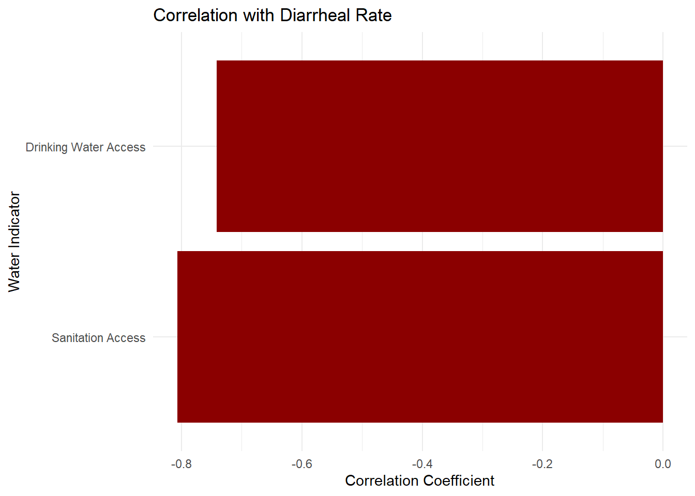
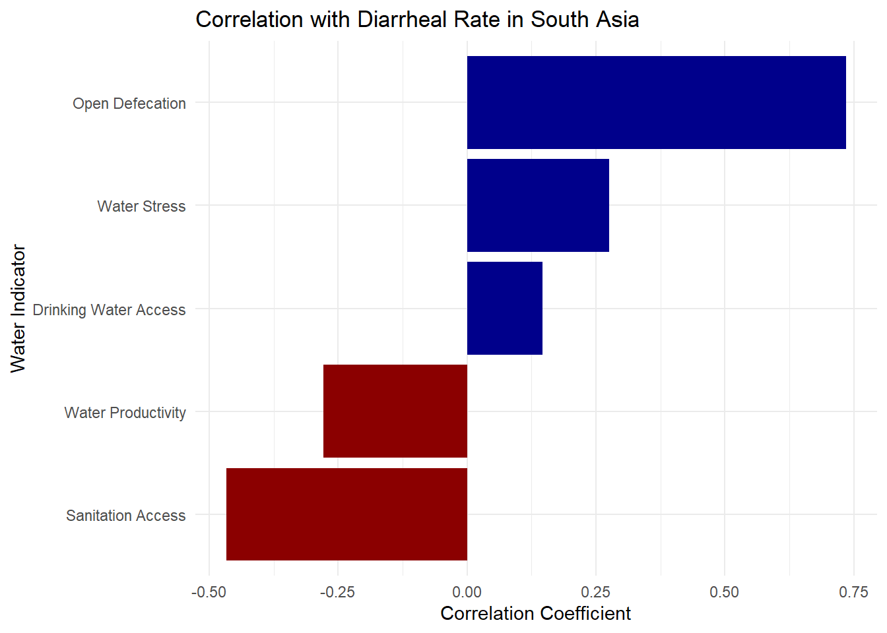

pacman::p_load(tidyverse,dplyr,tidyr, readxl,writexl,ggplot2, ggcorrplot, ggstatsplot, GGally, plotly,SmartEDA, easystats, gtsummary,
ggExtra,parallelPlot,ggdist, ggridges, ggthemes,
colorspace,lubridate, ggthemes, reactable,
reactablefmtr, gt, gtExtras)Take-home Exercise 03_P2
- Overview
The purpose of this analysis is to explore the relationship between water quality indicators and disease rates across different WHO regions. This study examines how access to basic water services, sanitation facilities, and other water-related indicators correlate with the prevalence of waterborne diseases such as typhoid, diarrhea, and hepatitis A. By understanding these relationships, we can identify potential interventions to reduce disease burden in affected regions.
- Data Preparation
2.1 Install and launch R packages
2.2 Import Data
merged_data <- read_csv("final_merged_data.csv")Rows: 2240 Columns: 13
── Column specification ────────────────────────────────────────────────────────
Delimiter: ","
chr (2): Country, World Bank Regions
dbl (11): year, Level of water stress: freshwater withdrawal as a proportion...
ℹ Use `spec()` to retrieve the full column specification for this data.
ℹ Specify the column types or set `show_col_types = FALSE` to quiet this message.2.3 Processing decimal point
merged_data <- merged_data %>%
mutate(across(where(is.numeric), ~ round(.x, 2)))cdata <- merged_data %>%
rename(
BasicSanitation = `People using at least basic sanitation services (% of population)`,
BasicWater = `People using at least basic drinking water services (% of population)`,
OpenDefecation = `People practicing open defecation (% of population)`,
WaterStress = `Level of water stress: freshwater withdrawal as a proportion of available freshwater resources`,
WaterProductivity = `Water productivity, total (constant 2015 US$ GDP per cubic meter of total freshwater withdrawal)`,
HepatitisA = `Acute hepatitis A`,
Diarrhea = `Diarrheal diseases`,
Typhoid = `Typhoid fever`,
Region = `World Bank Regions`)3.Visualization Explore
3.1 Bubble plot
By using an animated bubble chart, it can dynamically show the relationship between different water indicators and the water-related diseases. This visualization helps reveal the changes in health indicators over time and across countries,regions, while also taking population size as the bubble size into account.
Basic drinking water service & Diarrheal Rate
region_data <- merged_data %>%
filter(`World Bank Regions` == "Sub-Saharan Africa")
region_data <- region_data %>%
rename(
drinking_water = `People using at least basic drinking water services (% of population)`,
Diarrheal = `Diarrheal diseases`,
population = `Population, total`,
country = Country
)
p <- ggplot(region_data, aes(x = drinking_water, y = Diarrheal,
size = population,
frame = year)) +
geom_point(alpha = 0.7, color = "lightblue", show.legend = FALSE) +
scale_size(range = c(2, 12)) +
labs(x = "% Using basic drinking water service", y = "Diarrheal Rate") +
theme_minimal()
ggplotly(p) %>% layout(showlegend = FALSE)Basic drinking water service & Hepatitis A in Europe & Central Asia
region_data <- merged_data %>%
filter(`World Bank Regions` == "Europe & Central Asia")
region_data <- region_data %>%
rename(
drinking_water = `People using at least basic drinking water services (% of population)`,
hepatitis_A = `Acute hepatitis A`,
population = `Population, total`,
country = Country
)
p <- ggplot(region_data, aes(x = hepatitis_A, y = drinking_water,
size = population,
frame = year)) +
geom_point(alpha = 0.7, color = "lightblue", show.legend = FALSE) +
scale_size(range = c(2, 12)) +
labs(x = "% Using basic drinking water service", y = "Hepatitis A") +
theme_minimal()
ggplotly(p) %>% layout(showlegend = FALSE)3.2 Correlation Chart
A correlation bar chart is a clear and intuitive tool for analyzing the strength and direction of relationships between variables. By ranking bars and using different colors, it helps us quickly identify which water-related indicators are positively or negatively correlated with diseases. This type of chart is also flexible and can be used to compare data across different regions, countries, years.
Correlation with Diarrheal Rate
cor<- merged_data
water_vars <- c("People using at least basic drinking water services (% of population)",
"People using at least basic sanitation services (% of population)")
disease_var <- "Diarrheal diseases"
cor_results <- map_dfr(water_vars, function(water_var) {
temp <- cor %>% select(all_of(water_var), all_of(disease_var)) %>% drop_na()
cor_value <- cor(temp[[1]], temp[[2]])
tibble(
`Water Indicator` = case_when(
water_var == water_vars[1] ~ "Drinking Water Access",
water_var == water_vars[2] ~ "Sanitation Access"
),
Correlation = cor_value
)
})
ggplot(cor_results, aes(x = reorder(`Water Indicator`, Correlation), y = Correlation, fill = "darkred")) +
geom_col() +
coord_flip() +
scale_fill_identity() +
labs(title = "Correlation with Diarrheal Rate",
x = "Water Indicator", y = "Correlation Coefficient") +
theme_minimal()
Correlation with Diarrheal Rate in South Asia
cor2 <- cdata %>% filter(Region == "South Asia")
water_vars <- c("BasicWater", "BasicSanitation", "OpenDefecation", "WaterStress", "WaterProductivity")
disease_var <- "Diarrhea"
indicator_labels <- c(
BasicWater = "Drinking Water Access",
BasicSanitation = "Sanitation Access",
OpenDefecation = "Open Defecation",
WaterStress = "Water Stress",
WaterProductivity = "Water Productivity"
)
cor_results <- map_dfr(water_vars, function(water_var) {
temp <- cor2 %>% select(all_of(water_var), all_of(disease_var)) %>% drop_na()
cor_value <- if (nrow(temp) >= 2) cor(temp[[1]], temp[[2]]) else NA_real_
tibble(
`Water Indicator` = indicator_labels[[water_var]],
Correlation = cor_value
)
})
print(cor_results)# A tibble: 5 × 2
`Water Indicator` Correlation
<chr> <dbl>
1 Drinking Water Access 0.146
2 Sanitation Access -0.468
3 Open Defecation 0.735
4 Water Stress 0.276
5 Water Productivity -0.278ggplot(cor_results, aes(x = reorder(`Water Indicator`, Correlation), y = Correlation, fill = ifelse(Correlation >= 0, "darkblue", "darkred"))) +
geom_col() +
coord_flip() +
scale_fill_identity() +
labs(title = "Correlation with Diarrheal Rate in South Asia",
x = "Water Indicator", y = "Correlation Coefficient") +
theme_minimal()